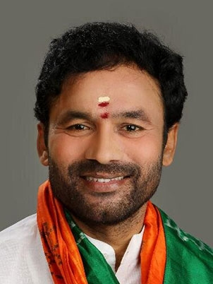

Instructions
- Please review the details below for each individual before voting
- You can vote for only one individual, so please vote carefully
- Please click the 'submit' button once after voting. If you want to clear your selections, please click on 'reset' button.
| Details | Name | Vote |
|---|---|---|
| Boianapalli Vinod Kumar was born on 22 July 1959. He is an Indian politician, advocate and Member of Parliament. He represents the Karimnagar constituency of Telangana State and previously represented Hanamkonda in the 14th Lok Sabha from 2004 to 2009). He is one of the founding members of the Telangana Rashtra Samithi (TRS) party and is presently a politburo member and the party's deputy Floor Leader in the Lok Sabha | Vinod Kumar Boinapally TRS |
|
| Nara Lokesh is the son of former Chief Minister of Andhra Pradesh Chandrababu Naidu. He forayed into politics as a campaign Manager in 2009 and climbed up the ranks of induction as MLC and Cabinet minister for IT, Panchayati Raj and Rural Development. Lokesh graduated with an MBA from Stanford University Graduate School of Business and Bachelor of Science with specialization in Management Information Systems from Carnegie Mellon University. | Nara Lokesh TDP |
|
| Kishan Reddy is a name not only heard in Indian political sphere but also resonates in international level as an active fighter against cross-border terrorism and as a child-friendly legislator. Born in remote village Thimmapur in Andhra Pradesh, He rose to the rank of national leader. At the age 11, He was elected as the president of his upper primary school. In his college days, He took the initiative to organize awareness programs that highlighted government apathy towards tackling terrorism and Conducted movements to highlight issues of the Blind and Physically challenged and advocated equal opportunities. |  Gangapuram Kishan Reddy BJP |
|